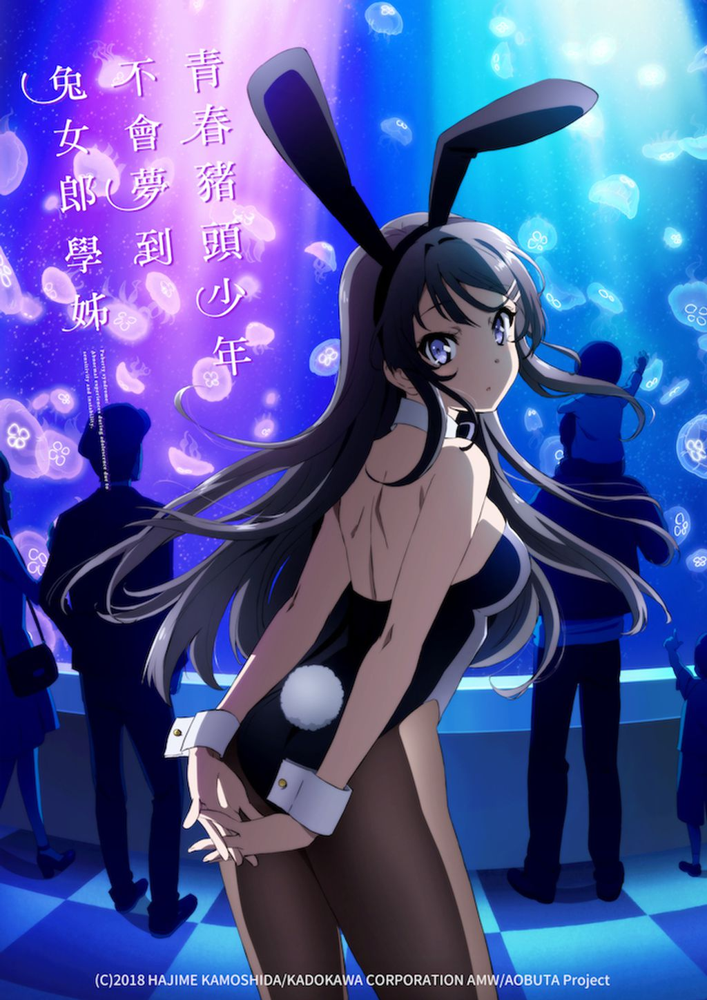

AnimeInterester
青春豬頭少年不會夢到兔女郎學姊

故事簡介
就讀高二的梓川咲太在圖書館遇見了野生的兔女郎，而兔女郎的真實身分竟是家喻戶曉、已引退兩年的女演員─三年級的櫻島麻衣。幾天前，她身邊的人們開始看不見她，這難道和網路上流傳、只會發生在青少年身上的神祕現象─「思春期症候群」有關？在天空與大海圍繞的這座城鎮，豬頭少年與兔女郎的戀愛故事開始了。
製作人員
原作：鴨志田一
原作插畫：溝口ケージ
導演：増井壮一
劇本統籌・劇本：横谷昌宏
角色設計：田村里美
總作畫監督：田村里美 / 髙田晃
副導演：いわたかずや
道具設計：髙田晃
美術設定：藤井一志
美術監督：渋谷幸弘
色彩設計：横田明日香
3D監督：野間裕介 / 唐澤祐人
攝影監督：関谷能弘
2Dワークス・特殊効果：内海紗耶
剪輯：三嶋章紀
音響監督：岩浪美和
音樂：fox capture plan
製作：青ブタ Project
聲優名單
梓川咲太：石川界人
櫻島麻衣：瀬戸麻沙美
古賀朋繪：東山奈央
雙葉理央：種﨑敦美
豐濱和香：内田真禮
梓川楓／梓川花楓：久保百合花
牧之原翔子：水瀬祈
各集標題
| 話數 | 標題 |
|---|---|
| 1 | 學姊是兔女郎 |
| 2 | 首次約會難免引起波瀾 |
| 3 | 只有妳不存在的世界 |
| 4 | 豬頭少年沒有明天 |
| 5 | 將所有謊言全獻給妳 |
| 6 | 妳所選擇的這個世界 |
| 7 | 名為青春的悖論 |
| 8 | 在大雨的夜晚沖走一切 |
| 9 | 恐慌姐姐 |
| 10 | 複雜的祝賀 |
| 11 | 楓的大挑戰 |
| 12 | 活在無盡夢境的後續 |
| 13 | 永夜迎來天明 |